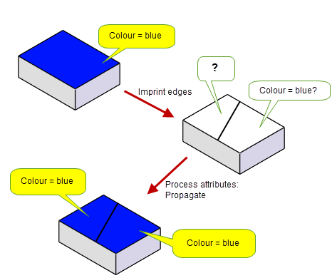
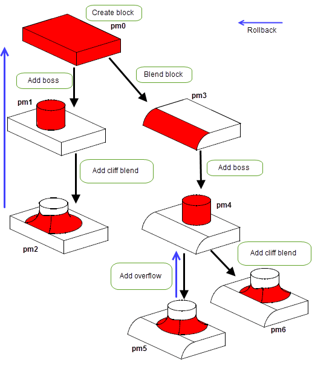

| |
Application Support |
| <<< Displaying Data | Chapters | Writing Parasolid Applications >>> |
Any Parasolid-powered application needs to provide functionality to the user that extends beyond core modelling operations. Although you could develop much of this functionality from scratch yourself, having built-in support from Parasolid makes the task easier, and provides better and more reliable performance to the user. In recognition of this, Parasolid provides tools to help you implement functionality in a range of key non-modelling areas. This chapter describes the most important of these.
Attributes are data structures that can be attached to Parasolid entities to supplement the standard data structure defined by Parasolid. Your application can use attributes to store arbitrary information that is associated with the entity to which it is attached. This is a convenient way of representing information such as constraints, manufacturing data, analysis data, references to entities in application data structures, and so on. Any of the following types of information can be stored in an attribute:
Attributes can be attached to any of Parasolid’s geometry and topology types. Once attached to a Parasolid entity, an attribute remains attached until either the entity is deleted or the attribute is deleted. When a Parasolid model is archived, any attributes attached to it are also archived.
Attributes are useful in almost any Parasolid-powered application. At the simplest level, they can be used to store information such as colour, or notes written by a user. They are a particularly powerful feature when used in concurrent engineering systems where the Parasolid model is the basic building block of a complex product definition model.
An application can have many different types of attributes at its disposal. The structure of each type (in terms of the type of data it can hold, where it can be used and so on) must be clearly defined using an attribute definition. Each attribute definition records information such as:
Your application can create as many different attribute definitions as required. Once an attribute definition has been created, attributes of that type can be attached to entities.
As well as specifying your own attribute definitions for use in your application. Parasolid comes pre-defined with a number of attribute types, known as system-defined attributes. These attribute types are used by Parasolid itself (for example, mass properties calculations use attributes that hold density information), and so should not be redefined in any way, but you are free to use them in your application, if you wish.
The system defined attributes provided by Parasolid include:
Parasolid provides a comprehensive range of operations for creating and managing attributes and attribute definitions. You can create attributes, attach them to entities, add information to them, retrieve information from them and delete them.
Parasolid also offers higher level attribute management functions, allowing you, for example, to filter attribute information so as to retrieve all attributes on a part based on some property of the attribute, such as its class or a specific value in one of its fields.
The class of an attribute definition indicates what happens to an attribute of that type when its owning entity is involved in a modelling operation. For example, if a face has an attached attribute, and that face is split into two as a result of imprinting an edge, what happens to the attribute? Under different circumstances, the attribute may be deleted, remain on the original face, or (as shown in Figure 15-1) be copied so that it exists on both faces, depending on the class of its attribute definition and the nature of the event.
Figure 15-1 Attribute behaviour when entities are modeled
Parasolid uses an attribute definition’s class to specify how to process attributes when their owning entities are involved in a modelling operation that cause any of the events shown below:
The Parasolid documentation suite contains a full list of all the attribute definition classes available, and the effect on attributes of those classes whose owning entities undergo any of these events.
Instead of relying on Parasolid’s normal attribute processing behaviour, you can specify your own by defining attribute callback functions. These let you provide your application with attribute processing behaviour that is more specifically tailored to your requirements than that available using Parasolid’s normal attribute handling.
You associate a callback function with a specific attribute definition, for a particular event. When the owning entity of an attribute of that type undergoes the event, the callback function is called. The events for which you can define callback functions are:
There are two types of callback function:
These functions can modify and enquire about the attributes or other parts of a model as necessary. When a normal callback is invoked, the action it carries out replaces Parasolid’s normal attribute processing (as described in Section 15.2.3).
These functions cannot modify the attributes or other parts of a model in any way. After a call to a read-only callback returns, Parasolid processes the attributes according to their class, in the usual way (as described in Section 15.2.3).
All but the most trivial applications should be able to undo user operations and return the application to the state it was in at some previous point in time. This is especially true of design environments, where users are likely to want to try out different ideas and experiment with tools and techniques. In addition, users expect sophisticated error recovery, and this requires an application to be able to return an entire session to a previously known stable state.
Parasolid addresses both these needs using a facility that is known generically as roll-back. There are different forms of roll-back, which between them provide comprehensive support for each of the situations mentioned above.
If you take advantage of Parasolid’s roll-back functionality, there are many ways that you might choose to make this available to the user. For example:
A partition is a self-contained collection of bodies that can be manipulated independently of other bodies. At any one time, many different partitions may exist. Parasolid provides two different types of partition:
A session is the collection of all partitions. There can only ever be a single Parasolid session open at any one time; each time a new session is started, a single partition is created automatically.
Parasolid supports two types of roll-back, both of which are available through the same general mechanism.
Partition-level and session-level roll-back both work by employing a system of marks. Rather like tying knots in a piece of string, your application can save marks at significant points in either the modelling session or the current partition. At any point, you can move to one of these marks, thereby restoring the session or partition status, as appropriate.
Partition-level roll-back can be used primarily as a means of providing your application with undo and redo functionality, allowing your users to move back and forth in a history tree of modelling operations. Depending on the amount of p-mark data your application maintains, this functionality can be as sophisticated at the user level as you require it to be: anything from a simple one-step undo facility to a complete implementation of a comprehensive history tree.
Partition-level roll-back is also crucial for enabling feature modelling applications to perform model updates after model parameters are changed: a feature modeler needs to roll back a model to the point where a feature was added, reapply the modified feature, and then reapply subsequent features to generate the updated model.
Individual bodies or collections of bodies can be rolled back independently, so updating one model in a session does not affect other models. Branching roll-back of bodies - several alternative updates to a given body - can also be implemented.
In the context of partition-level roll-back, a partition is a simply a self-contained collection of bodies which can be rolled back and forward independently of other partitions. When a Parasolid session is started, a single partition is created automatically. Your application can create additional partitions when required, so that a given Parasolid session may eventually contain many partitions.
You can use partitions to collect together bodies in any way you wish. For example, you may decide that each partition in a session should contain only one part. Adding partition-level roll-back to your application would then mean that your users could make changes to individual parts and roll those changes back or forward independently of other parts in the session.
Only one partition can be current (that is, in use) at any time. As the Parasolid session progresses, your application should create p-marks in the current partition, thereby creating a series of checkpoints in the history tree that can potentially be rolled back to later in the session.
If new entities are created that do not reference existing entities, they are automatically placed in the current partition.
Parasolid provides a full range of functionality to let you manage the partitions in a session, including the ability to:
Figure 15-2 shows an example of how you might implement partition-level roll-back and present it to the user. The figure illustrates a number of stages in the creation of a part, showing the different design decisions that the user has gone through, and how your application can use partition-level roll-back to support those design decisions:
At this stage, Parasolid can potentially roll between any of the partition marks already created (unless your application has explicitly tidied up some of the p-mark data along the way). Depending on the history facility you have implemented in your application, this can give the user the potential to jump to any stage in the design process at will.
Figure 15-2 An example of partition-level roll-back in use
In addition to partition-level roll-back, session-level roll-back lets you roll back the contents of an entire session, including partitions, session parameters and modelling parameters. Session-level roll-back can be used as part of an error handling strategy for your application, giving you the ability to return the session to a stable state whenever an operation fails.
The session-level equivalent of a p-mark is a session mark. These record the state of the entire session and, as with p-marks, you can return the session to any recorded session mark.
Groups are used to collect entities together so that they can be modelled as if they were a single entity. For example, you can put all the faces of a particular feature, such as a boss, into a group. You can use groups to supplement the Parasolid data structure to suit your application. Parasolid groups enable form feature applications and constraints managed applications to be easily developed. The way you use this functionality depends upon your specific requirements.
Each group is owned by a specific part and can only contain entities that belong to that part. In addition, each group has a specified class that determines the classes of entities that can be added to the group. You can use the group class to prevent inappropriate entities being added to a group.
A given body or assembly can have any number of groups, which can be of the same or different classes. Similarly, a given entity can be added to any number of valid groups, as determined by the group class.
Parasolid tracks and updates entities in groups during modelling operations. A documented set of rules determines how group membership is affected if any entity within a group is merged with other entities, split or deleted.In addition, Parasolid lets you define rules based on certain criteria to enable you to intelligently manage the number of groups defined on a part, for example by automatically deleting groups when they are empty.
Keeping track of changes to entities during a modelling session is an important factor for most 3D modelling applications. When new entities are created as a result of a modelling operation, your application may need to keep a record of how that entity came into being. Tracking entities is particularly important in any feature-based system. Likewise, an application may need to track entities in order to update graphical display information.
Parasolid offers a number of different ways that you can track activity during a modelling session. Which of these you use (or which combination of them you use) depends almost entirely on what information you need to track.
| <<< Displaying Data | Chapters | Writing Parasolid Applications >>> |